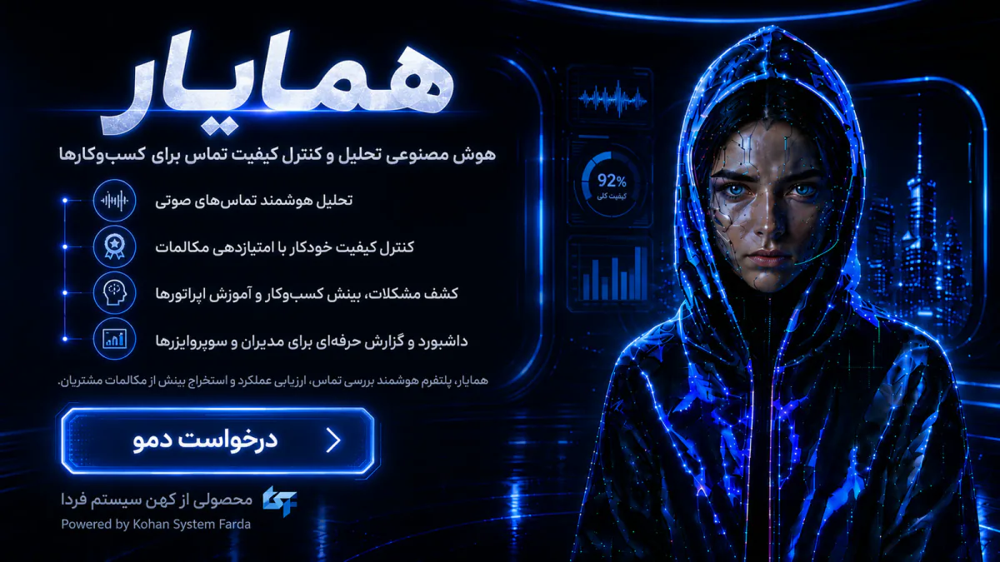

11 MAY 2025
هوش مصنوعی مولد
ابزارهای هوش مصنوعی مولد؛ از ایده تا اجرا
نگاهی کاربردی به اینکه کسبوکارهای کوچک و تیمها چگونه میتوانند از AI برای پشتیبانی، محتوا، خودکارسازی، آواتار و مدیریت زمان استفاده کنند.